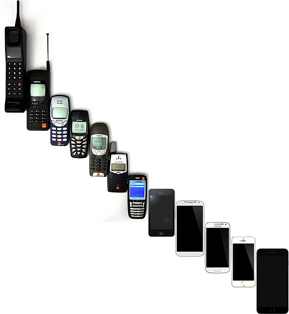

A mobile phone (or cellphone[a]) is a portable telephone that can make and receive calls over a
radio frequency link while the user is moving within a telephone service area, as opposed to a
fixed-location phone (landline phone). The radio frequency link establishes a connection to the
switching systems of a mobile phone operator, which provides access to the public switched
telephone network (PSTN). Modern mobile telephone services use a cellular network
architecture and therefore mobile telephones are called cellphones (or "cell phones") in North
America. In addition to telephony, digital mobile phones support a variety of other services, such
as text messaging, multimedia messaging, email, Internet access (via LTE, 5G NR or Wi-Fi),
short-range wireless communications (infrared, Bluetooth), satellite access (navigation,
messaging connectivity), business applications, payments (via NFC), multimedia playback and
streaming (radio, television), digital photography, and video games. Mobile phones offering only
basic capabilities are known as feature phones (slang: "dumbphones"); mobile phones which
offer greatly advanced computing capabilities are referred to as smartphones.
The first handheld mobile phone was demonstrated by Martin Cooper of Motorola in New York
City on 3 April 1973, using a handset weighing c. 2 kilograms (4.4 lbs).In 1979, Nippon
Telegraph and Telephone (NTT) launched the world's first cellular network in Japan. In 1983,
the DynaTAC 8000x was the first commercially available handheld mobile phone. From 1983 to
2014, worldwide mobile phone subscriptions grew to over seven billion; enough to provide one
for every person on Earth. In the first quarter of 2016, the top smartphone developers
worldwide were Samsung, Apple and Huawei; sales represented 78 percent of total
mobile phone sales. For feature phones as of 2016, the top-selling brands were Samsung,
Nokia and Alcatel.
Facts:
We are talking about the Ericsson GS88 “Penelope” model which is the first mobile phone that was called “smartphone”, a term that ended up being, as you know, tremendously popular.
Mobile phones are considered an important human invention as it has been one of the most
widely used and sold pieces of consumer technology. The growth in popularity has been rapid
in some places, for example in the UK the total number of mobile phones overtook the number
of houses in 1999.Today mobile phones are globally ubiquitous, and in almost half the
world's countries, over 90% of the population own at least one.A feature phone
has additional functions over and above a basic mobile phone, which is only capable of voice
calling and text messaging. Feature phones and basic mobile phones tend to use a
proprietary, custom-designed software and user interface. By contrast, smartphones generally
use a mobile operating system that often shares common traits across devices.In the first quarter of 2016, the top smartphone developers
worldwide were Samsung, Apple and Huawei; smartphone sales represented 78 percent of total
mobile phone sales.